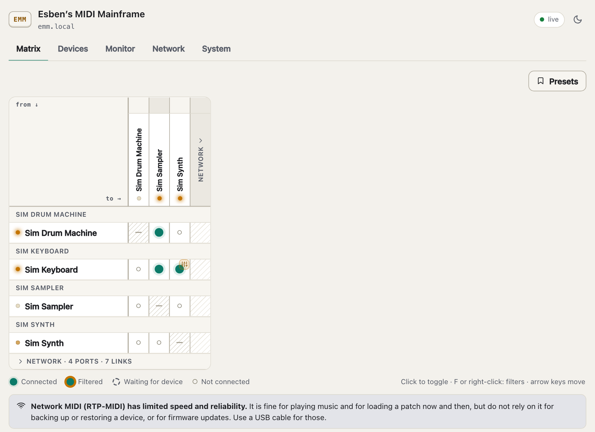
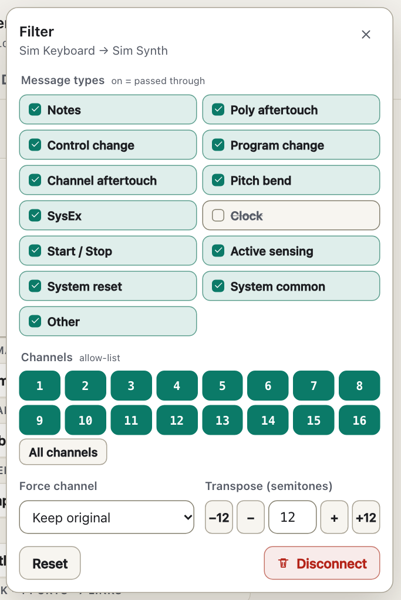
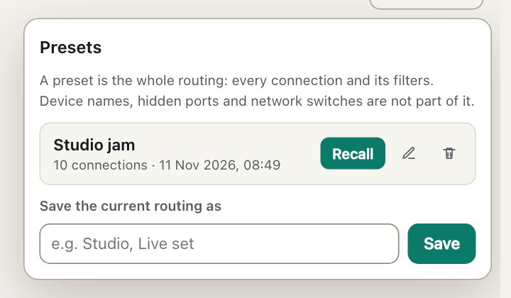
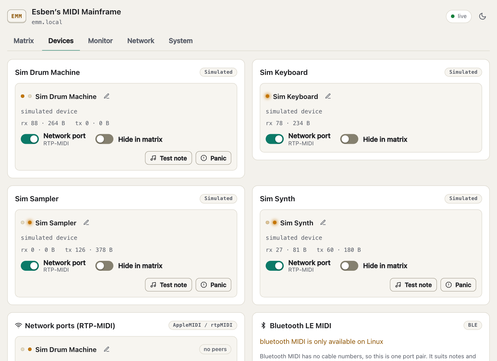
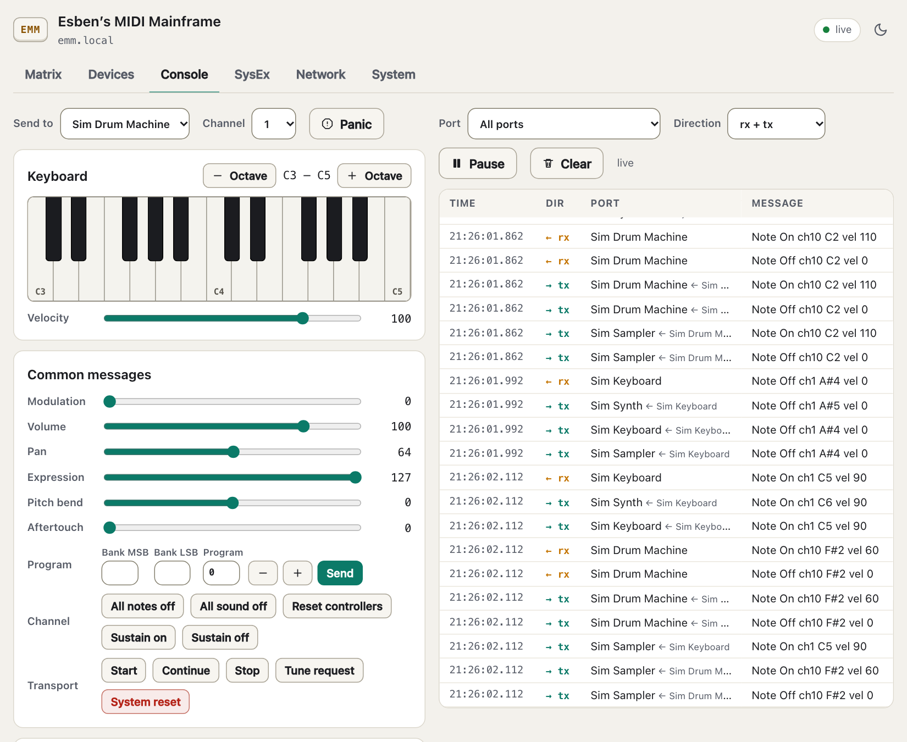
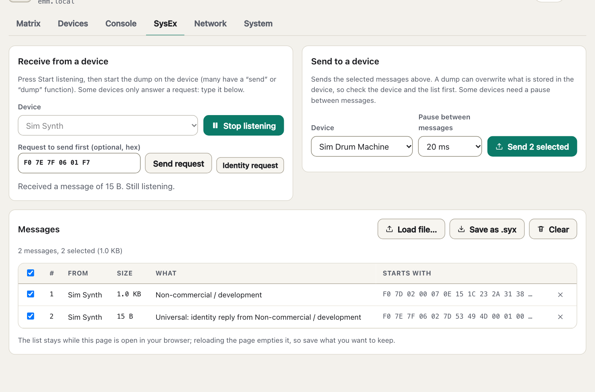
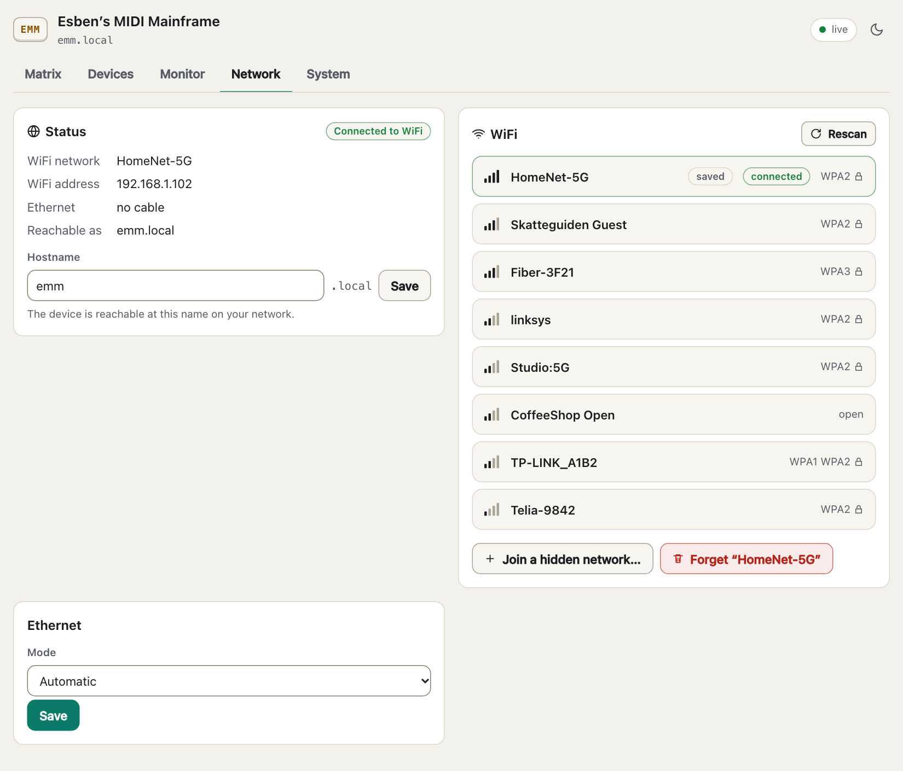
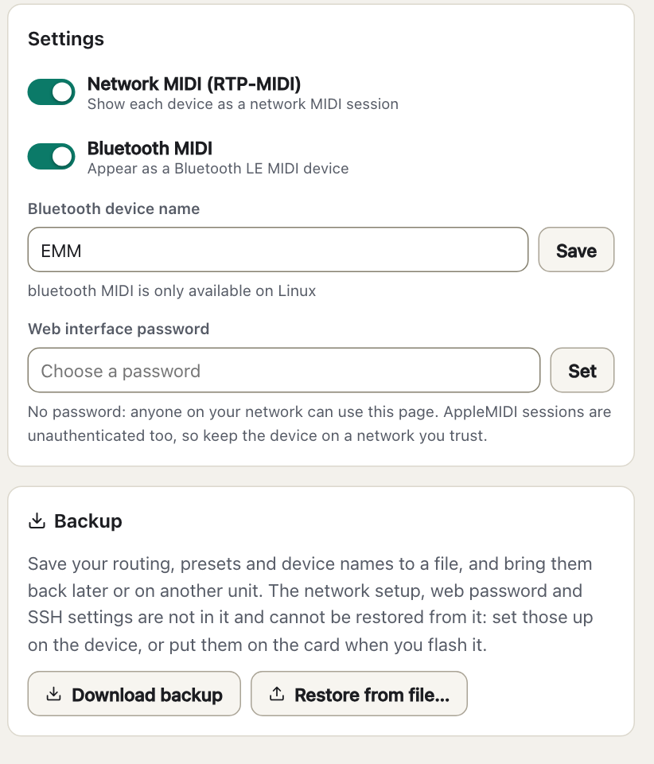

You plug your synths, drum machines, keyboards and interfaces into a powered USB hub, and the hub into a Raspberry Pi. EMM sees every MIDI port and lets you connect any output to any input from a web page. Every USB device also appears on the network as a MIDI device of its own, so a laptop or tablet can talk to a synth without a cable.
.syx files.Network MIDI over WiFi or Ethernet is fine for playing music and for loading a patch now and then. Its speed and reliability are limited, so do not rely on it for backing up or restoring a device, or for firmware updates: use a USB cable for those. Section 6 explains why.
| Board | Verdict | Notes |
|---|---|---|
| Raspberry Pi 4 B, Pi 400 | Good | Gigabit Ethernet is separate from USB; dual-band WiFi. |
| Raspberry Pi 5 | Good | More headroom. Needs the 27 W supply for full USB power. |
| Pi 500 / 500+, CM4, CM5 | Probably good, untried | Same chips as the Pi 4 and 5. Compute modules need a carrier board with USB and may need USB host mode switched on, which the appliance card does not do: use Raspberry Pi OS for them. |
| Pi 3 B / B+ | Works | Its Ethernet shares one USB 2.0 link with your MIDI devices (see the hardware notes in the repository). WiFi is not affected. 64-bit OS only. |
| Pi Zero 2 W | Works, with limits | One USB data port, so you need an OTG hub with its own power. 2.4 GHz WiFi only, which Bluetooth shares. |
| Pi 1, 2, Zero, Zero W | Not supported | 32-bit only. |
On 2.4 GHz the Pi's WiFi and Bluetooth share one antenna and disturb each other: use 5 GHz WiFi, or Ethernet. For tight timing, such as MIDI clock or fast live playing, use Ethernet: WiFi has no guarantees about delay and jitter. EMM turns WiFi power-save off, which removes tens of milliseconds of jitter.
There are two ways. Both give the same EMM, with the same web interface and the same emm.txt. (The technical documentation in the repository calls the installer route "A" and the appliance card "B".)
| The appliance SD card | Raspberry Pi OS and the installer | |
|---|---|---|
| What you do | Copy a set of files onto a FAT32 SD card | Flash Raspberry Pi OS Lite, run one command from your computer |
| What you get | A small "appliance" system that runs from memory, so the system itself is never written to. Only your settings are saved to the card: a power cut during a save at worst loses that save, and the card is checked and repaired at the next boot | A normal Debian system with EMM as a service; SSH, logs, apt |
| Needs | A copy of the project and image/build.sh, which builds emm-sdcard-<version>.zip (needs Docker, 15–30 GB of disk and one to two hours per board; see docs/SDCARD-IMAGE.md) | A copy of the project, a computer with Go 1.22 or newer and ssh, and Raspberry Pi Imager |
emm-sdcard-<version>.zip. One zip works on the Pi 3 B/B+/A+, Zero 2 W, Pi 4/400 and Pi 5/500 families (compute modules: see section 2).# macOS (erases the whole card: check the disk number with diskutil list first)
diskutil eraseDisk FAT32 EMM MBRFormat /dev/disk4
# Linux (replace sdX; erases the card)
sudo parted /dev/sdX --script mklabel msdos mkpart primary fat32 4MiB 100%
sudo mkfs.vfat -F 32 -n EMM /dev/sdX1diskpart (check list disk first: clean erases the whole disk).
diskpart
list disk
select disk N
clean
convert mbr
create partition primary size=4096
format fs=fat32 quick label=EMM
assignemm-sdcard-<version> folder onto the card, so that config.txt is in the root of the card and not in a subfolder.emm.txt.example to emm.txt on the card and set at least wifi_country (section 4); the web interface has no field for it.The card holds your hand-written emm.txt and an emm folder that EMM creates: state.json (routing, presets, device names) and system.json (network, web password and SSH, which are secrets). Pulling the plug is safe except in the second or so after you press Save in the web interface; that save may be lost. This behaviour has not yet been tested on a real card.
Updating: copy the new files over the old ones on the card and keep emm.txt and the emm folder.
ssh pi@raspberrypi.local works (with the user name you chose).scripts/deploy.sh pi@raspberrypi.local--dry-run first to see what it would do. It builds EMM for the Pi, copies it over and runs the installer there. The installer is safe to run again.emm; if you chose another host name in Imager it keeps it, so use http://<that name>.local/ (the installer prints the address at the end).The installer sets up the system packages EMM needs, the EMM service, and a few small system settings (WiFi power-save off, no USB autosuspend for MIDI devices). It never overwrites your emm.txt or saved settings. Updating: run scripts/deploy.sh pi@<the Pi's name>.local again; settings stay. Removing: scripts/deploy.sh --uninstall pi@… keeps your settings and WiFi profiles so the Pi stays reachable.
ap_password in emm.txt. Join it with a phone or laptop. A "sign in to network" page opens by itself; if it does not, go to http://emm.local/ or http://10.42.0.1/. Choose your WiFi, enter its password, and EMM joins it. Your phone drops off the setup network at that moment: reconnect to your normal WiFi and open http://emm.local/.nmtui) keeps its connection. EMM adopts it and does not open the setup network. Open http://<the Pi's hostname>.local/ (the name it already has, for example http://raspberrypi.local/; EMM only renames the machine if you set hostname).Set the WiFi country (wifi_country in emm.txt, for example DK). In many regions WiFi stays off until it is set, and the 5 GHz channels you may use depend on it.
To start one, copy emm.txt.example to emm.txt and remove the # in front of the lines you want. It is a plain text file in the root of the card (/boot/firmware/emm.txt on Raspberry Pi OS) for settings you want fixed from the start: WiFi, hostname, passwords and so on. One key = value per line; a line starting with # is a comment. Keys in emm.txt override the web interface and are applied on every boot; leave a key out to manage it from the web page. The full list is in the reference (section 10). The file emm.txt.example on the card lists every key, commented out.
hostname = studio
wifi_country = DK
wifi_ssid = MyNetwork
wifi_password = "correct horse #1"
web_password = something-privateTo get the setup network back, create an empty file called reset-network next to emm.txt and reboot; EMM deletes it again, and leaves setup mode within about 30 seconds of an Ethernet cable being plugged in. To clear the routing, presets and device names, delete emm/state.json and any emm/state.json.new or .old next to it; to clear the network, web password and SSH settings, do the same for emm/system.json; then reboot. (On Raspberry Pi OS these files are in /var/lib/emm/; sudo rm /var/lib/emm/state.json* removes them.) A power cut can leave a .new or .old copy, and EMM would bring back the newest complete one.
Nothing here removes what you wrote in emm.txt. Its WiFi, hostname and Ethernet lines win over the web interface at every boot. To change those, edit or remove the lines in emm.txt (card in a computer).
Open http://emm.local/ in any browser on the same network. The page has five tabs. The green "live" mark at the top right means the page is receiving updates from the device. The screenshots in this manual were taken with simulated devices.
The matrix is the heart of EMM. Rows are sources (where MIDI comes from), columns are destinations (where it goes). Click a cell to connect or disconnect; a filled circle means connected. Where a row and a column are the same port the cell is hatched with a dash: a port cannot feed itself. Several sources can feed one destination, and one source can feed several.

Right-click a connected cell (or select it and press F) to adjust that one connection. On a touch screen, press and hold the cell, or tap the small sliders button that appears on a connected cell (or beside a switched-on source in the phone list). Changes take effect immediately; there is no Save button. Close the editor with the ×, Esc or by clicking outside it.

The Presets button above the matrix saves the whole routing, every connection with its filters, under a name, and brings it back later with Recall.

Recalling a preset replaces the current routing. Device names, hidden ports and network switches are not part of a preset. If a preset names a device this unit has forgotten, that connection is skipped and the page tells you. Each preset also has Rename and Delete buttons. You can keep up to 50 presets, with names of up to 40 characters that differ from each other (capitals do not count); saving under an existing name asks before replacing it.
Below the matrix the page says: Network MIDI (RTP-MIDI) has limited speed and reliability. It is fine for playing music and for loading a patch now and then, but do not rely on it for backing up or restoring a device, or for firmware updates. Use a USB cable for those. See section 6.
One card per USB device, listing its ports. A device that has several MIDI cables shows several ports.

The Console tab shows the MIDI traffic and lets you send MIDI by hand. On the right is a live list of the messages passing through from the moment you open the tab (the latest 500 rows), with time, direction, port, a readable description and the raw bytes. rx is what a port received from its device, tx is what was sent out to it (with the source after the arrow; what you send from this page is marked this page).

On the left you choose where to send: Send to lists the devices that are plugged in with USB and can receive MIDI, and Channel is used by everything below that needs one. Network and Bluetooth ports are not offered here. Panic sends "all sound off", "all notes off" and "sustain pedal up" on every channel.
B0 07 64 or F0 7D 01 F7. A message must be complete: a missing byte or a stray one is refused rather than sent.SysEx (system exclusive) messages carry patch, setup and sample dumps that belong to one make of device. This tab receives such a dump into the browser, saves it as a .syx file, and sends a dump, from the browser or from a file, to a device. It works with USB devices only: a dump has to arrive complete, which network and Bluetooth MIDI cannot promise.


name.local).emm.txt is shown as locked with an emm.txt mark, because the file wins at every boot.While the device is in setup mode, a rescan switches the setup network off for a few seconds. Your phone may lose its connection to it and should reconnect by itself.

emm.txt are shown locked.ssh root@emm.local (the card shows the exact command, with your hostname). It stays on across reboots until you switch it off. On Raspberry Pi OS use the system's own sshd instead.Every USB device, and every network port you add, is announced on the network as an RTP-MIDI (AppleMIDI) session. Your computer sees the synths as MIDI devices without any cable. Discovery uses Bonjour/mDNS, the same mechanism as emm.local.
| System | How |
|---|---|
| macOS | Open Audio MIDI Setup, then Window → Show MIDI Studio, and double-click Network. Make sure your own session (Session 1) is ticked Enabled. EMM's devices appear in the Directory list; select one and click Connect. The device then shows up as a MIDI port in your music software. |
| Windows | Windows has no built-in RTP-MIDI. Install Apple's Bonjour (it comes with iTunes or Bonjour Print Services) and an RTP-MIDI driver such as rtpMIDI, then connect to the EMM sessions there. |
| Linux | Use an RTP-MIDI client that supports AppleMIDI sessions, with avahi for discovery. |
| iPhone, iPad | Apps with network MIDI support list the sessions; see the app's own MIDI settings. |
Not verified yet: EMM's RTP-MIDI and Bluetooth MIDI have so far been tested only against EMM's own test code, not against Apple's, Windows' or Linux network MIDI software, nor against macOS, iOS or Android Bluetooth MIDI. The steps above are what should work, not a promise. If a computer cannot see or connect to a session, try another client, or Ethernet instead of WiFi, and see Troubleshooting.
A connection from the network behaves like any other port: in the matrix the network ports sit in their own group, so you can route a synth's output to a network port or the reverse, with filters.
EMM appears as a Bluetooth LE MIDI device named EMM (or the name you chose); no PIN is needed. Connect from the MIDI application, not only from the system's Bluetooth list: on macOS Audio MIDI Setup → Window → Show MIDI Studio → Bluetooth; on iPhone and iPad in the Bluetooth MIDI settings inside apps such as GarageBand. Bluetooth MIDI has no cable numbers, so EMM shows it as one port pair, in the network group of the matrix. It suits notes and controllers. Keep the Bluetooth name short (about eight characters): a longer name may be cut in your device's list.
RTP-MIDI runs over UDP on a network that may drop or delay packets, and over WiFi it has no guarantee about delay and jitter. EMM does not implement the recovery journal of the RTP-MIDI standard (RFC 6295). When a packet is lost, or a session ends, EMM releases the notes that peer was holding so nothing sticks (a held sustain pedal is the exception: use Panic on the Devices tab), but a lost packet can cut a note the player is still holding. A SysEx message that loses a packet is discarded rather than forwarded, so a dump can arrive incomplete, with no error to tell you.
Good for: playing music, controlling a synth from a computer, and loading a patch now and then.
Not for: backing up or restoring a device, firmware updates, and anything where a single damaged message can do harm. A failed firmware update can leave a device unusable. For those, unplug the device from EMM's hub, connect it directly to your computer with a USB cable, and use the maker's own software. Bluetooth MIDI is for notes and controllers only; do not send SysEx dumps or samples over it.
Ethernet or 5 GHz WiFi is less bad than 2.4 GHz WiFi for a one-off patch or sample, but it does not make backups, restores or firmware updates safe.
Presets are described in section 5. They are stored on the device and are part of a backup.
System tab → Backup. Download backup saves a file with your routing, presets, per-port names and settings, the list of devices EMM remembers, and the network MIDI and Bluetooth switches. Restore from file… puts a backup back after a confirmation, replacing the current routing, presets and names. A restore applies the connections like a preset recall: connections to devices that are in the backup but not plugged in are kept and show as Waiting for device; connections to a port the backup does not list, or that no longer has that direction, are skipped and reported.
The network setup (WiFi password), the web interface password and the SSH settings are not in a backup, and a restore never changes them, not even from a hand-edited file. They are the device's own and are kept in a separate file, system.json. A backup file can therefore be shared or stored without exposing them.
Setting up a fresh card. Put the WiFi, hostname and web password in emm.txt before the first start, or copy system.json from another unit's card into an emm folder on the new card (create the folder; on Raspberry Pi OS it is /var/lib/emm/system.json). SSH is switched on in the web page; to keep its host key, so the fingerprint does not change, copy the emm/ssh folder as well. Then restore your backup from the System tab. A copied system.json includes the hostname, so do not run the old and the new unit on one network with the same name.
This backup is for EMM's own settings. It is not a backup of the synths: for those, use each device's own software with the device connected directly to your computer by USB (see section 6).
A USB device that reports no serial number is told apart by the hub port it sits in. When you move one to another port, EMM carries its connections, name and network port over to the new port, as long as that is unambiguous: exactly one device of that model is attached, and exactly one is remembered as absent. With two identical devices EMM cannot tell them apart, so give each its own port and leave it there. Devices that do report a serial number are recognised wherever you plug them.
EMM is made for a trusted home or studio network. Read this before putting it on a shared one.
web_password in emm.txt. It uses HTTP Basic authentication, so it is only worthwhile on a trusted network.ble = off) if that matters.ap_password is set; the home WiFi password you type there crosses the air once. While it is up, anyone who joins it can change the WiFi settings, even if a web password is set. Set ap_password if that matters.system.json and emm.txt on the card. Treat the SD card like the password it contains.allowed_hosts.It relies on mDNS. macOS, iOS and Linux (with avahi) resolve it; Windows 10/11 usually does. On a VPN or managed network, or on Android, use the IP address: look for emm in your router's client list, or ping emm.local from a computer where it works.
Set wifi_country in emm.txt. EMM does not open the setup network while Ethernet has a working connection. On Raspberry Pi OS check the service with systemctl status emmd and journalctl -u emmd -b.
Open http://emm.local/ or http://10.42.0.1/ by hand. Turn off a VPN, and "private DNS" on Android.
dtoverlay=dwc2, g_ether) is active.sudo emmd --list-devices shows what was detected. On the appliance card the matrix shows what was found, and a monitor on the HDMI port shows the boot messages.Connect from the MIDI application, not only from the system Bluetooth list (section 6). Windows and Android need an app that supports Bluetooth LE MIDI. On 2.4 GHz, WiFi and Bluetooth share the radio: use 5 GHz WiFi or Ethernet if connections are unstable.
Use Ethernet or 5 GHz WiFi, and a USB cable for anything large. RTP-MIDI over WiFi was not built for bulk data; the USB side is not the bottleneck.
Changes will not survive a restart. On the appliance card check that the SD card is not write-protected or worn out. A file that cannot be read is left untouched rather than overwritten, so a flaky card cannot wipe your settings.
Switch the Pi off and put the card in a computer. Either add web_password = something-new to emm.txt (it is used instead of the saved one), or delete emm/system.json and any system.json.new and .old next to it (this also clears the network and SSH settings, which you then set up again). Put the card back and power on, then set a new password in the System tab and remove the line from emm.txt if you want to manage it there.
One key = value per line. Quote a value ("…" or '…') if it contains # or starts or ends with a space; inside quotes everything is literal. A line EMM cannot use is ignored and the reason goes to its log.
| Key | Values | Meaning |
|---|---|---|
hostname | letters, digits, -; up to 63 characters. Default emm | Reachable as <hostname>.local |
wifi_country | two letters, e.g. DK | WiFi regulatory country; WiFi stays off in many regions until it is set |
wifi_ssid, wifi_password | name up to 32 bytes; password 8–63 characters or 64 hex digits | WiFi network to join. An empty password means an open network. A password of the wrong length is tried anyway and the join fails |
ethernet | auto, dhcp, static, off | Wired network mode. Default auto |
eth_address, eth_gateway, eth_dns | 192.168.1.50/24; an address; one or more addresses | Used only with ethernet = static |
ap_ssid, ap_password | name up to 32 bytes; password 8–63 characters or 64 hex digits | The setup network. Default EMM-Setup-XXXX, no password. A password of the wrong length is ignored and the setup network is then open |
rtp | on / off | Network MIDI. Default on |
ble, ble_name | on / off; text | Bluetooth MIDI and the name shown when pairing. Default on, EMM |
web_password | text | Password for the web interface; used instead of one saved from the web page |
allowed_hosts | names separated by commas, spaces or semicolons; a leading dot allows a whole domain | Extra names the web interface accepts, for example a name your router gives the Pi |
Passwords in this file are stored as plain text.
| File | What |
|---|---|
emm.txt | Your hand-written settings (optional). Never overwritten by EMM or an update |
reset-network | Create it empty to get the setup network on the next boot; EMM deletes it |
emm/state.json | Routing, presets, device names, the RTP and Bluetooth switches (created by EMM) |
emm/system.json | Network (including the WiFi password), web password hash and SSH settings (created by EMM). Secret: not part of a backup |
emm/ssh/ | The SSH host key, so the fingerprint survives reboots (appliance card) |
*.new, *.old | Leftovers of an interrupted save. EMM settles them at the next start (and keeps the newest complete copy) |
*.corrupt-… | A damaged file that EMM set aside. It stays until you delete it, and may contain your WiFi password |
EMM saves its files so that a power cut at any moment leaves a complete copy: it writes a new, checksummed file first, swaps it in, and at the next start picks the newest complete copy. A damaged file is kept next to the new one, never silently deleted.
EMM is new. Most of it is covered by automated tests on a development machine with simulated devices. It has run on real Raspberry Pi hardware with real USB synths, and the appliance card has been started on a Raspberry Pi 3 B+ and a Pi 4 (a WiFi join problem found there is fixed in the card's kernel, not yet tested on a Pi). Not verified yet: the Pi 5, 500 and compute-module builds, the Bluetooth MIDI server, the SSH switch, saving behaviour on a real card after a power cut, and compatibility with other makers' RTP-MIDI and Bluetooth MIDI software. Expect rough edges, and use emmd --log-level debug when something does not behave.
| Word | Meaning |
|---|---|
| Appliance card | The ready-to-run SD card made by the project: a small system that runs from memory |
| DHCP | Your router hands out the device's network address automatically |
| FAT32, MBR | The disk format and partition table the Pi's bootloader can read |
| mDNS, Bonjour, avahi | How computers find emm.local and network MIDI sessions without you typing an address |
| OTG | A USB port that can act as host or as device (Pi Zero 2 W, compute modules) |
| RTP-MIDI, AppleMIDI | MIDI over a network, also called network MIDI |
| SysEx | System exclusive: long MIDI messages used for patch dumps, backups and firmware |
| UMP | Universal MIDI Packet, the format of USB MIDI 2.0 |